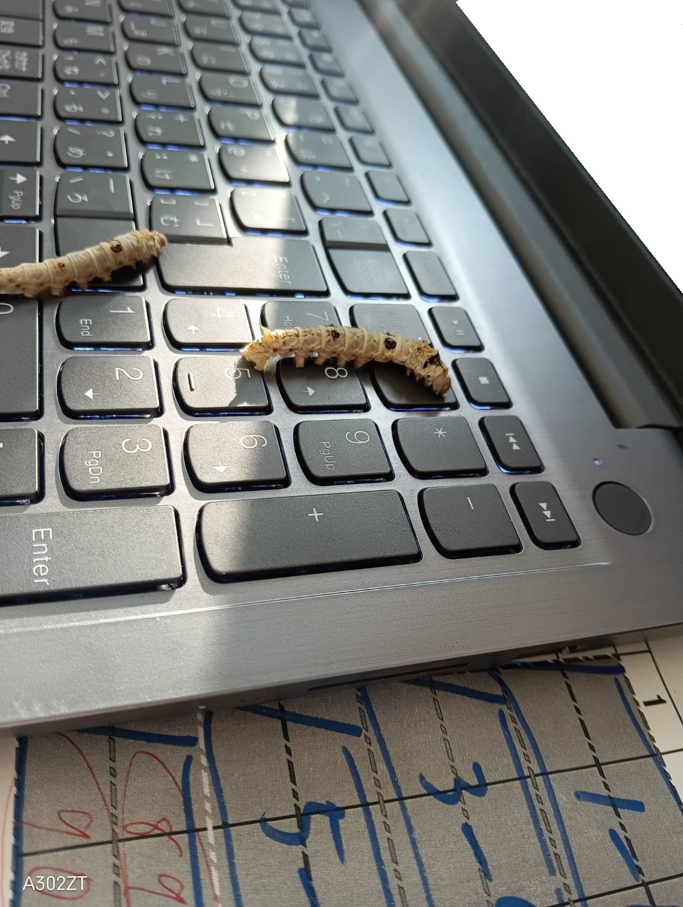

蚕を語ろう


パソコンの上に乗っている蚕
パソコンの上に蚕がいます。かわいいですね笑
せっかくなので、今回は蚕について語ろうと思います。
そもそも蚕って何者？
蚕（カイコ）は、絹糸を作るために人間が長い時間をかけて育ててきたガの仲間です。祖先は野生のクワコという虫だと考えられていて、何千年も前から人間と関わってきました。
蚕の一生は、卵から始まります。卵から幼虫が生まれ、桑の葉を食べて大きくなり、やがてサナギになって、最後は成虫のカイコガになります。
幼虫の間はとにかくよく食べます。主な餌は桑の葉。何度か脱皮を繰り返しながら成長していきます。
そして、大きくなった幼虫は糸を吐いて繭を作ります。この糸が絹の原料になるわけです。繭ひとつから取れる糸は、なんと約1,000メートル以上になることもあります。小さな体でそんなに長い糸を作れるなんて、なかなかすごいですよね。
人間がいないと生きていけない？
蚕の面白いところは、人間に飼われることにとても適応していることです。
長い年月をかけて飼育されてきた結果、成虫になっても飛ぶことができず、自分で餌を探したり、外敵から逃げたりするのも苦手です。野生のクワコとは違い、人間に世話をしてもらうことを前提とした生き物になっているんですね。
ちなみに、成虫のカイコガは口が退化していて、餌を食べません。主な役割は交尾をして卵を産むこと。成虫になってからの寿命も短く、だいたい1〜2週間ほどです。
幼虫のときは桑の葉を食べて大きくなり、成虫になると子孫を残して一生を終える。そう考えると、蚕の一生はなかなか独特です。
実は遺伝子研究でも活躍しています
蚕は絹糸を作るだけでなく、遺伝子の研究にも使われています。
飼育しやすく、成長の様子を観察しやすいため、体がどのように作られるのか、遺伝子がどんな働きをしているのかを調べるのに役立つんです。
さらに、蚕は糸の材料になるタンパク質をたくさん作る能力を持っています。この能力を利用して、特定のタンパク質を作らせる研究も行われています。
昔は絹糸を取るために飼われていた蚕が、今では科学の研究にも使われているわけです。長い歴史があるのに、まだまだ研究することがあるんですね。
というわけで、蚕は面白い
蚕は、人間に飼育されることで今の姿になった生き物です。絹糸を作る能力はもちろん、独特な一生や、遺伝子研究への活用など、知れば知るほど興味深いところがあります。
そんなことを考えながら、改めてパソコンの上にいる蚕を見てみます。
かわいいですね笑。